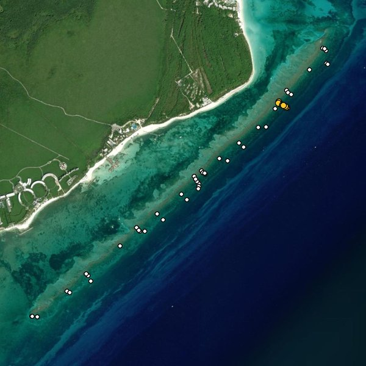
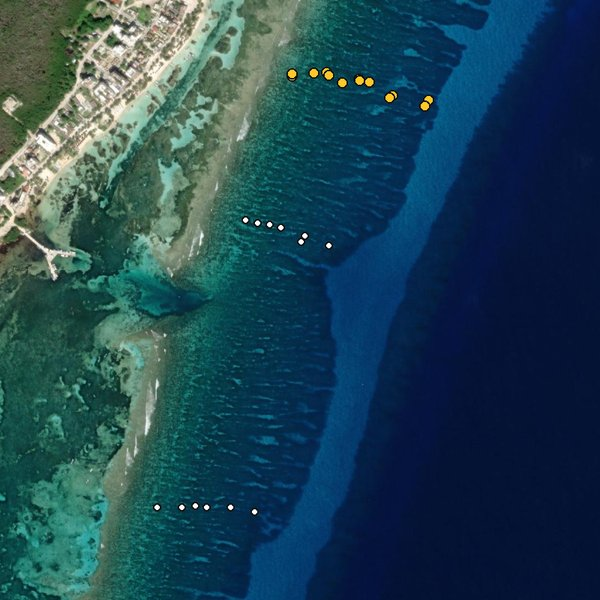

Punta Maroma publicado
91 edades U-Th (Medina-Valmaseda et al. 2025; Blanchon et al. 2017) · 12 logs de perforación

Mahahual en curso
13 núcleos (2021–2022) y 12 muestras superficiales (2025–2026) · fechamiento pendiente
Xcaret publicado
33 secciones verticales del arrecife MIS 5e · 33 edades U-Th (Blanchon et al. 2009; Blanchon 2010) · posiciones reconstruidas